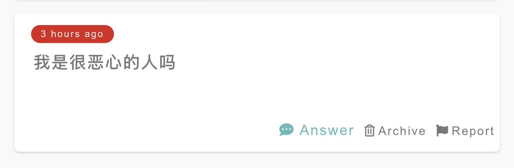
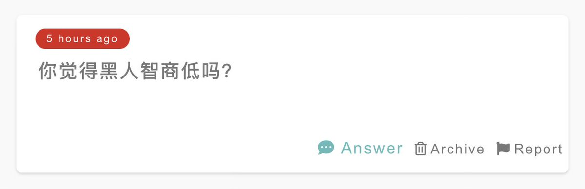

小虚空🍥
@tokerumaisurii
你是谁呢？
这个世界上既有我觉得恶心的人，也有我觉得不恶心的人，所以我没法在不知道是谁的情况下也能说出“不是哦”这样的话，除非我哪天觉得所有人都不恶心了。
#16 2025-08-03


小虚空🍥
@tokerumaisurii
我不太认“智商”这种东西，其一是人的多种方面的智慧很难被小小的一份量表一场测试去单向度地测定出来，其二是把一个人的智慧程度评出一个数值根本就是好无聊的作为。这个问题一眼就可以猜到你是谁（笑），所以特送你一句我的观点，如果过于迷信定量和客观的话，小心变成凯派和康米哦。
#15 2025-08-03 https://t.co/YwWYPxJGpY